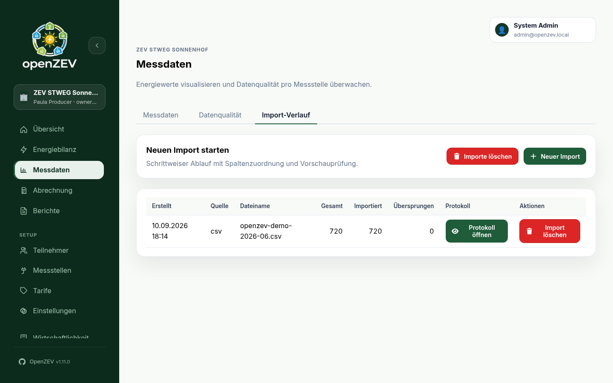

Metering Imports¶
This guide covers importing metering (consumption and production) readings into OpenZEV.
Import Overview¶
OpenZEV supports two import pathways:
- CSV/Excel Files — Column-mapped spreadsheets
- SDAT-CH Format — Swiss standard metering data exchange (ebIX XML)
CSV imports use a preview-first validation workflow: you upload, review the column mapping and a preview (no data written yet), then confirm the import. SDAT-CH has no preview step: the file imports directly and an import protocol opens automatically when anything was skipped or failed. Every import creates a protocol accessible from the import history.
A disabled ZEV is read-only for its owner: CSV preview remains available, but CSV/Excel and SDAT-CH imports are rejected until an administrator re-enables the ZEV. Administrators may still import into a disabled ZEV.

CSV/Excel Import¶
Sample files¶
The import wizard offers two downloadable samples that match the demo data
(CH-DEMO-CONS-0001, CH-DEMO-CONS-0002, CH-DEMO-PROD-0001):
standard-readings.csv— one reading per row (meter_id,timestamp,energy_kwh,direction)daily-15min-profile.csv— one day per row with 96 quarter-hour values; set First interval column to00:00after selecting it
Legacy .xls files are rejected — save them as .xlsx or CSV first. Maximum
file size is 50 MB.
File Format¶
Prepare your data as CSV or Excel. Two row layouts are supported (select Row format in the wizard):
Standard — one reading per row:
| Column | Required | Format | Example |
|---|---|---|---|
meter_id |
✓ | Meter ID string | CH-DEMO-CONS-0001 |
timestamp |
✓ | ISO 8601 or Date/time format below | 2026-01-15 14:00:00 |
energy_kwh |
✓ | Decimal (kWh, , accepted as .) |
1.2500 |
direction |
✗ | in, out, or an OBIS code (inferred from meter type when blank) |
in |
Daily profile — one day per row with N interval values:
| Column | Required | Format | Example |
|---|---|---|---|
meter_id |
✓ | Meter ID string | CH-DEMO-CONS-0001 |
date |
✓ | Calendar date (see Date/time format) | 15.01.2026 |
direction |
✗ | in, out, or an OBIS code — applies to the whole row |
1-1:1.29.0*255 |
00:00 … 23:45 |
✓ | N decimal interval values (default 96 × 15 min) | 0.2500 |
Empty interval cells are skipped. A daily row with no values at all is
rejected with Row contains no interval values. — in preview and import
alike. Delimiter may be any single character (for example ,, ;, |, or tab), or \t (typed escape for tab).
Step-by-Step Import¶
-
Go to Import history (sidebar Metering → tab Import history, or
/metering/importsdirectly). Select the target ZEV in the page header — CSV preview and import require it (zev_id, API 400 without it) and only meters in that ZEV are imported; other meters are reported as missing. -
Upload File
- Click New Import
- Select your CSV or Excel file — or several at once (Ctrl/Shift-click in the file dialog). Each file gets its own card with a Remove button
- Click Next: Configuration
All selected files are imported with the same settings (column mapping, date format, overwrite mode), so select files that share one layout. Each file becomes its own entry in the import history and protocol. Selecting files again replaces the current selection.
-
Check the detected settings
- OpenZEV reads the first file and fills in the settings for you: delimiter, header row, one value per line or one day per row (with its interval and number of values), the meter ID, date/time and direction columns, and the date format. A note above the settings says what was detected.
- If something could not be detected, the note names it and the field keeps a default — fill it in yourself.
- Change anything that is wrong; your changes are kept when you go back and forth. Detect again discards them and re-reads the file.
- With several files, the settings come from the first file and apply to all of them.
Configure Mapping (only needed where the detection is wrong)
- Assign columns in your file to OpenZEV fields:
Meter ID column→ which column?Timestamp/Date column→ which column?Energy columnorFirst interval column→ which column?Direction column(optional) → which column says consumption vs. feed-in?
- Set Date/time format as a Python
strptimepattern (e.g.%d.%m.%Y,%Y-%m-%dT%H:%M:%S%z), or leave empty for auto-detect. The format must capture the full calendar date (year + month + day);%d.%mis rejected. Day-of-year (%Y-%j) is accepted. - For daily profiles set Intervals per row and Minutes per interval.
Native Excel datetime cells ignore Date/time format — they are read as-is (assumed UTC). The format only applies to text cells.
-
Preview (required for CSV)
- Click Load Preview. Configuration changes, including toggling overwrite, invalidate the preview — reload before importing. Selecting or removing a file also requires a new preview. With several files, each gets its own preview section; one file with errors blocks the whole import, and a meter missing from any file is listed once.
- Check Metering point exists per row; missing IDs are listed with copy/download actions and block Start Import until the meters exist.
- Check Direction: where each row's readings will land — Consumption (in), Feed-in (out), or both when a bidirectional meter's row splits by sign. If a whole file shows the wrong direction, the Direction column mapping is wrong.
- Check Existing data: the database already holds that reading (standard rows), or the day already holds readings for that meter/direction (daily rows). Enabling overwrite shows an estimate of how many existing readings will be replaced; fully duplicate rows never block the import — they are skipped (reported in the protocol) in skip mode and replaced in overwrite mode.
- Review Errors: parse failures and empty daily rows. Values above 99999999.9999 kWh are rejected: they cannot be stored. Partially duplicate daily rows show no error — the existing slots are skipped and missing ones are imported (gap-fill).
-
Review Import Options
- Overwrite existing readings for the same metering point + timestamp +
direction (unchecked by default). When checked, re-importing overwrites any
existing readings that match; when unchecked, existing readings are kept
and duplicates are skipped per slot. Overwrites are reported as a protocol
Note (
Overwrote N existing readings.), not as errors. - After changing this option, reload the preview. Fully existing daily rows are skipped by default and replaced with overwrite enabled. Invalid values block import in either mode.
- Overwrite existing readings for the same metering point + timestamp +
direction (unchecked by default). When checked, re-importing overwrites any
existing readings that match; when unchecked, existing readings are kept
and duplicates are skipped per slot. Overwrites are reported as a protocol
Note (
-
Confirm Import
- Click Start Import (blocked while the preview is missing, outdated, has errors, or lists missing meters)
- The system writes data and shows a result notification. Imports with errors or overwrite notes also open Import Protocol; other protocols can be opened from the history table.
Import Protocol¶
Open Import Protocol from the history table to see totals (Total rows / Imported rows / Skipped rows), an informational Notes section (e.g. overwrite counts), and a Skipped row reasons table (row, meter, reason). Overwrites show a success toast; only true failures show an error toast. Both errors and overwrite notes auto-open the protocol.
Duplicate handling: the same metering point + timestamp + direction is stored
once. Fully existing daily rows show a non-blocking preview notice, so a file
with existing days and newly appended days can be imported together.
Re-importing without overwrite skips existing slots and imports missing
ones; fully duplicate rows are skipped with a Duplicate reading error.
SDAT-CH Format¶
OpenZEV supports the Swiss SDAT-CH metering data standard (used by utility providers).
- Go to Metering → Import history and click New Import
- Choose the SDAT-CH (ebIX XML) format
- Upload your SDAT-CH file, or several at once (one import per file)
- OpenZEV automatically parses metering point IDs, timestamps (with the offset the file carries) and values (kWh)
- There is no preview: the import runs immediately, and the import protocol opens automatically if any rows were skipped or failed. With several files they are imported one after another; if some fail, the others stay imported and only the failed files remain selected so you can retry.
Note: SDAT-CH metadata (meter type, interval) is extracted; timestamp resolution is auto-detected.
Timestamp Handling¶
OpenZEV stores all readings on the UTC timeline, and there is no timezone selector in the import UI:
- A timestamp with an offset (
2026-01-15T14:00:00+01:00, as in SDAT-CH files) is converted to UTC correctly. - A timestamp without an offset (
2026-01-15 14:00:00) is read as UTC, not Swiss time. - A daily-profile row's first interval starts at 00:00 UTC of its date.
- Billing periods also run from 00:00 UTC to 00:00 UTC.
So a file of Swiss local times without offsets lands one hour (winter) or two
hours (summer) late. Within a period that changes nothing, but readings near
a period boundary can fall into the neighbouring period. If your files carry
local time, prefer an export with offsets and a format such as
%Y-%m-%dT%H:%M:%S%z.
The Date/time format field is a Python
strptime pattern controlling how text timestamps are parsed; empty means
auto-detect (ISO first, then day-first European fallback for dates like
07.01.2026). The pattern must include the full date — %d.%m.%Y,
%Y-%m-%dT%H:%M:%S%z, %Y-%j — while %d.%m or %H:%M are rejected.
Whatever you choose, use one consistent timestamp interpretation across all your import files: mixing local-time and UTC files for the same meter creates overlaps and gaps an hour wide.
Common Import Scenarios¶
Scenario 1: Hourly Solar + Consumption¶
File: readings_2026-01.csv
meter_id,timestamp,energy_kwh
CH12345-solar,2026-01-15 00:00:00,0.000
CH12345-solar,2026-01-15 01:00:00,0.000
CH12345-solar,2026-01-15 12:00:00,2.150
CH12346-load,2026-01-15 00:00:00,0.750
CH12346-load,2026-01-15 01:00:00,0.630
- Upload file
- Map columns (meter_id, timestamp, energy_kwh)
- Check the detected timestamp format and the preview (2 meters, one row per reading)
- Import
Scenario 2: Utility SDAT-CH Export¶
Utility provides file: 20260315_metering.sdat
- Click New Import and choose SDAT-CH (ebIX XML) (select the target ZEV first)
- OpenZEV auto-parses metadata
- The import runs without a preview; check the protocol for skipped rows
Handling Import Errors¶
"Metering point not found"¶
The CSV references a meter ID that doesn't exist in the selected ZEV. Solutions:
- Check metering point ID spelling in CSV
- Create missing metering points in Metering Points — the preview banner lets you copy or download the missing IDs and links straight there
- Re-run import (preview first — Start Import stays blocked while meters are missing)
"Duplicate reading for metering_point + timestamp + direction"¶
The reading already exists. Without overwrite, fully duplicate rows are
skipped; partially duplicate daily rows gap-fill the missing slots. With
Overwrite existing readings checked, matching readings are updated and the
protocol notes Overwrote N existing readings.
Two files for the same meter, one consumption and one feed-in? Grid
operators often deliver a profile export as one file per OBIS code — grid
import as 1.29.0, feed-in as 2.29.0 — with the same metering point ID and
positive values in both. Imported without a Direction column, the second
file looks like a duplicate of the first and every row is skipped.
Map the OBIS column as the Direction column (in these exports it is the
second column, index 1) and both files import onto the same metering point,
one as consumption and one as feed-in. The preview's Direction column
confirms it before you commit. Note that the field is empty by default —
nothing is pre-filled for you.
Do not use Overwrite existing readings to force the second file through: it replaces the first file's readings with the second file's values under the first file's direction, which silently destroys the data you already imported.
"Row contains no interval values."¶
A daily-profile row carried no interval values at all. Fill in at least one slot — preview and import both reject the empty row.
"Value parse error"¶
Reading value is not numeric (e.g., "N/A").
Solutions:
- Clean CSV: Replace non-numeric error values with
0.000(or leave the cell empty to skip the slot in daily profiles) - Correct the invalid rows and re-run the import (skipped/failed rows are listed in the import protocol)
- Re-run import
Re-importing (Corrections & Updates)¶
If you find errors in imported data:
- Prepare corrected CSV
- Go to Metering → Import history
- Tick Overwrite existing readings only to replace matching readings (same metering point + timestamp + direction). Unticked (default, safe): new readings are added, existing ones kept, duplicates skipped per slot.
- Upload and preview
- Confirm
Best practice: Leave overwrite off unless you mean to change history. To remove bad imports entirely, delete the import log (single or period bulk-delete) — period deletion uses UTC days on import creation time, while history timestamps render locally, so check the UTC note in the delete dialog.
Deleting imports¶
Single and bulk deletion remove eligible import logs plus all readings still
linked to their batches, then refresh metering data. Imports that overwrote
readings cannot be deleted, because their previous values cannot be restored.
The delete action is disabled for these imports; their protocol explains why.
If a bulk selection includes a protected import, the entire deletion is rejected
and nothing is removed. The bulk dialog lists the blocking protected imports
(filename and creation time) and disables confirmation while any is included.
To correct an overwrite import, upload corrected values
with overwrite enabled. Period bulk-delete matches
created_at in the half-open UTC range [date_from 00:00Z, date_to+1d 00:00Z) —
the visible-count preview uses the same UTC math as the backend.
Data Quality Checks¶
After import, review Metering → Data Quality (/metering/quality) to see:
- Coverage per metering point
- Missing readings
- Gaps vs. assignment/participant validity windows
- Unassigned readings / assignment overlap warnings
See Metering Analysis for details.
Generating Sample Data (CLI)¶
For development, testing, or demo purposes, OpenZEV includes a management command to generate realistic metering data with proper daily patterns.
Usage¶
python manage.py generate_metering_data <meter_id> <type> --start <date> --days <n> [--interval <interval>]
| Argument | Required | Description |
|---|---|---|
meter_id |
✓ | Meter ID (e.g. CH1234567890120000000006666665030) or metering point UUID |
type |
✓ | consumption, production, or bidirectional |
--start |
✓ | Start date in YYYY-MM-DD format |
--days |
✓ | Number of days to generate |
--interval |
15min (default) or hourly |
|
--peak-kwh |
Override auto-scaled peak kWh per interval | |
--net-metering |
Simulate grid connection meter: production offsets consumption. Auto-enabled for bidirectional type |
|
--dry-run |
Show statistics without writing to the database |
Examples¶
# 30 days of consumption at 15-minute intervals
python manage.py generate_metering_data CH1234567890120000000006666665030 consumption \
--start 2026-01-01 --days 30 --interval 15min
# 90 days of solar production at hourly intervals
python manage.py generate_metering_data CH9876543210987000000000044440859 production \
--start 2026-01-01 --days 90 --interval hourly
# 60 days of bidirectional data (net metering auto-enabled)
python manage.py generate_metering_data CH1234567890120000000006666665030 bidirectional \
--start 2026-01-01 --days 60
# Consumption meter behind a solar system (grid connection meter)
python manage.py generate_metering_data CH1234567890120000000006666665030 consumption \
--start 2026-01-01 --days 30 --net-metering
# Preview without writing
python manage.py generate_metering_data CH1234567890120000000006666665030 consumption \
--start 2026-01-01 --days 7 --dry-run
When running in Docker:
docker compose exec backend python manage.py generate_metering_data \
CH1234567890120000000006666665030 consumption --start 2026-01-01 --days 30
Data Profiles¶
The generated data uses realistic patterns:
- Consumption: Household load profile with morning and evening peaks, low overnight usage, and weekday/weekend variation.
- Production: Solar generation bell curve peaking around 13:00, with seasonal variation (higher in summer) and random cloud effects.
- Bidirectional: Generates both consumption and production readings using net metering (auto-enabled).
- Net metering (
--net-metering): Simulates a grid connection meter where local solar production offsets consumption. Only the surplus is recorded —INreadings reflect grid import (consumption exceeding production),OUTreadings reflect grid export (production exceeding consumption).
Duplicate readings (same metering point, timestamp, and direction) are skipped automatically.
Next Steps¶
- Check data quality: Metering Analysis
- Set up tariffs: Tariff Configuration
- Generate invoices: Invoice Management